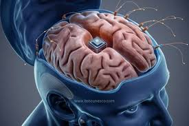

Explore intelligent systems, automation, and fundamentals.
Mathematics
Learn about linear algebra, vectors, and other essential maths topics.
Physics
Explore waves, energy, and physics concepts in a simple way.
My Projects
A collection of coding, maths, and physics projects.
Computer Science

Artificial Intelligence (AI) is about building systems that perform tasks usually requiring human intelligence. Machine Learning (ML) is a subfield that enables computers to learn from data and improve over time without explicit programming.
Training models involves showing examples, adjusting parameters, and learning patterns to make predictions or decisions. This process mimics human learning and problem-solving.
Key ML types include Supervised Learning, Unsupervised Learning, and Reinforcement Learning, each serving different purposes from classification to pattern discovery and decision-making.
Vectors
Learn about vectors
Linear Algebra
Learn about linear algebra,
Integration
Learn about integration
Differentiation
Learn about differentiation
Vectors
Hello this is about vectors
Physics Concepts
Waves
Waves are disturbances that transfer energy through a medium. Understanding wave properties such as frequency, wavelength, and amplitude is fundamental to sound, light, and water physics.
Energy
Physics studies how energy is transferred and conserved in systems, from kinetic and potential energy to more complex phenomena in thermodynamics and electromagnetism.